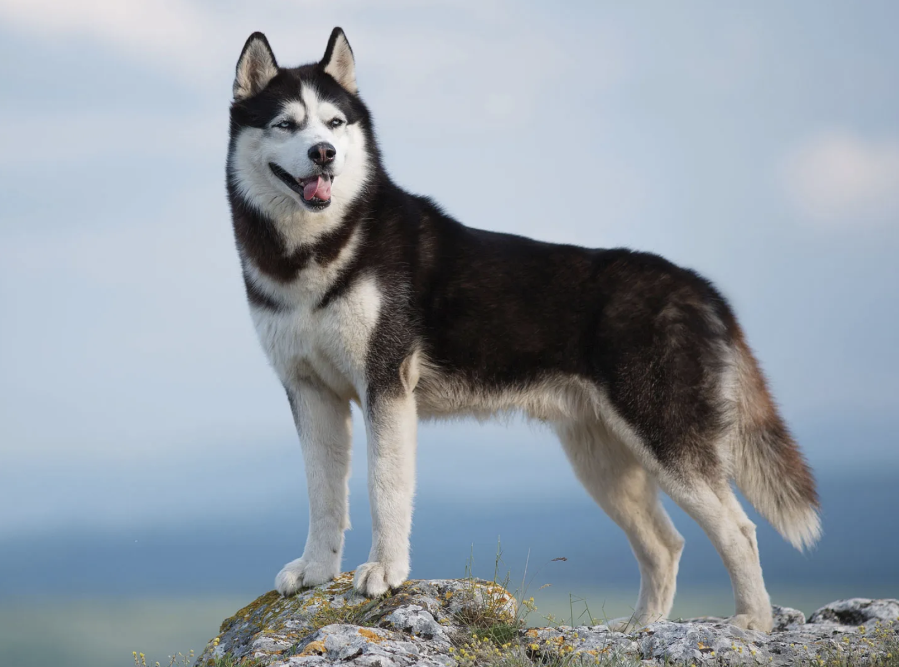

- #Gen AI
- #Content Strategy
- #UX Research
- Summary
- Updates
- Contributors
Summary
Project Husky: Using Conversational AI to Bridge Academia and Tech
In this project, the team needs to set up an initial landing page to communicate the goals and plan for a chatbot service.
Level of Difficulty: Beginner
Role: UX Designer, Content Designer, Researcher

Project Name Trivia
Siberian Husky, a thickly coated, compact sled dog of medium size and great endurance, was developed to work in packs, pulling light loads at moderate speeds over vast frozen expanses. Sibes are friendly, fastidious, and dignified. The graceful, medium-sized Siberian Husky's almond-shaped eyes can be either brown or blue and sometimes one of each and convey a keen but amiable and even mischievous expression
Work Plan Overview
Problem Statement
The challenge this project addresses is that families of children with autism in the U.S. face significant barriers to accessing free educational resources. This project bridges these gaps by developing an AI agent, open-sourcing solutions, and collaborating with institutions to connect academic research with real-world applications. The challenge is significant because over 2 million children in the U.S. have autism (CDC), with thousands of families unable to access free resources due to procedural complexity, lack of centralized information, and language barriers
Project Proposal
- Project Rationale. The generative AI-powered solution we are proposing is BRIDGE LAB, an initiative that helps academia explore generative AI’s potential for social impact. It begins with an AI agent that connects children with autism in the U.S. to community partners, helping families access free, individualized educational support.
- What is the deliverable? The solution will effectively address the problem described above by developing an AI agent that uses generative AI to simplify resource navigation, provide multilingual support, and offer personalized pathways. This approach will be guided by rigorous prototyping, testing, and collaboration with parents, community partners, and institutions.
- Outcome and Impact. The end beneficiaries we hope to support are children with autism and their families, starting in Southern California and expanding nationwide. With 100,000 in Southern California, 240,000 in California, and 2 million across the U.S., we also assist educators, school districts, and the special education community.
Scope of the Project
Phase 1: Landing Page Creation
- Content Strategy
- Creating a Wiki page
- Creation of Survey questions
- Set up Analytics or CRM tool to add to the landing page.
Phase 2: this project focuses largely on content modeling work
- Map out responses from analytics or feedback gathering app
- Data modeling the AI response
- Using Chat GPT for scalable process of documentation
Contributors Needed:
- Content designers, Product designers, Researchers
- General interest in emerging tech tools, familiarity with Conversational AI or chatbots
- Ready to dive into strategy, documentation
- Passion for supporting community and working with end users.
For more info, check out our "Updates" page.
Project Updates
Contributors Needed
Content Designers
We are seeking a passionate volunteer Content Writer to contribute to Project Husky, an initiative using conversational AI to bridge the gap between academic research and real-world applications. In the first phase, you will focus on building a compelling landing page that effectively communicates the project's mission and impact.
Responsibilities:
- Develop content strategy for the landing page to clearly convey the project's purpose and benefits.
- Write engaging and concise copy that resonates with families, educators, and community partners.
- Create survey questions to gather valuable feedback from users.
- Collaborate with the team to set up analytics tools to track landing page engagement.
- Ensure content is aligned with the mission of improving access to educational resources for children with autism.
Qualifications:
- Strong writing and communication skills with experience in web content creation.
- Passion for social impact, particularly in the field of education and accessibility.
- Ability to work collaboratively in a remote team setting.
- Prior experience in content strategy or landing page development is a plus.
This is a volunteer position. Join us in making a meaningful difference through conversational AI!
Getting Started
Welcome hackathon participants, mentors and builders. We are so excited to work with you!
Stay tuned for more event details, check out The Open Sprints Teamspace for annoucements and additional resources to help you get started. Here's everything you need to know about Project Husky.